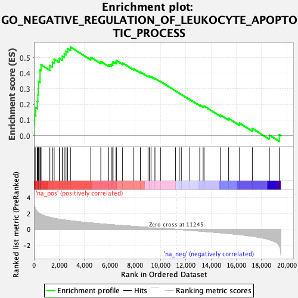
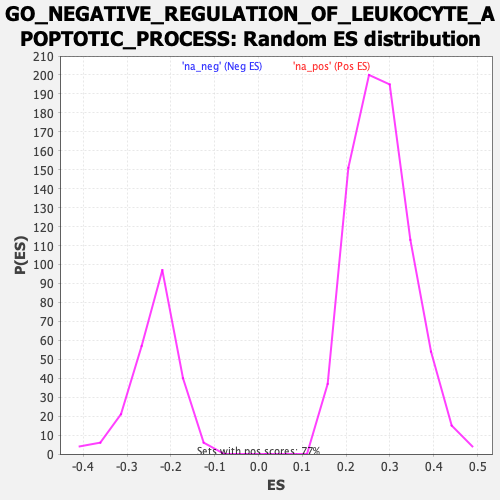

| | | Dataset | Recurrence |
| Phenotype | NoPhenotypeAvailable |
| Upregulated in class | na_pos |
| GeneSet | GO_NEGATIVE_REGULATION_OF_LEUKOCYTE_APOPTOTIC_PROCESS |
| Enrichment Score (ES) | 0.5673047 |
| Normalized Enrichment Score (NES) | 2.030025 |
| Nominal p-value | 0.0 |
| FDR q-value | 0.02362822 |
| FWER p-Value | 0.207 |
Table: GSEA Results Summary

Fig 1: Enrichment plot: GO_NEGATIVE_REGULATION_OF_LEUKOCYTE_APOPTOTIC_PROCESS
Profile of the Running ES Score & Positions of GeneSet Members on the Rank Ordered List
| SYMBOL | RANK IN GENE LIST | RANK METRIC SCORE | RUNNING ES | CORE ENRICHMENT | | 1 | CD74 | 11 | 3.513 | 0.0715 | Yes |
| 2 | CCR7 | 35 | 3.057 | 0.1331 | Yes |
| 3 | HCLS1 | 140 | 2.526 | 0.1796 | Yes |
| 4 | PIP | 265 | 2.241 | 0.2193 | Yes |
| 5 | CXCL12 | 303 | 2.167 | 0.2619 | Yes |
| 6 | FOXP1 | 337 | 2.114 | 0.3036 | Yes |
| 7 | CCR5 | 356 | 2.085 | 0.3455 | Yes |
| 8 | CCL21 | 478 | 1.957 | 0.3794 | Yes |
| 9 | ITPKB | 480 | 1.956 | 0.4195 | Yes |
| 10 | GHSR | 561 | 1.877 | 0.4540 | Yes |
| 11 | CD27 | 1256 | 1.510 | 0.4493 | Yes |
| 12 | GPAM | 1460 | 1.437 | 0.4684 | Yes |
| 13 | IRF7 | 1595 | 1.387 | 0.4900 | Yes |
| 14 | PRKCQ | 2003 | 1.264 | 0.4950 | Yes |
| 15 | IL7R | 2239 | 1.210 | 0.5078 | Yes |
| 16 | IRS2 | 2393 | 1.173 | 0.5240 | Yes |
| 17 | MERTK | 2532 | 1.145 | 0.5405 | Yes |
| 18 | FCER1G | 2665 | 1.116 | 0.5566 | Yes |
| 19 | BMP4 | 2886 | 1.072 | 0.5673 | Yes |
| 20 | JAK3 | 4493 | 0.802 | 0.5013 | No |
| 21 | TSC22D3 | 5285 | 0.687 | 0.4748 | No |
| 22 | BCL10 | 5911 | 0.605 | 0.4551 | No |
| 23 | CCL5 | 6108 | 0.580 | 0.4570 | No |
| 24 | CCL19 | 6227 | 0.564 | 0.4625 | No |
| 25 | DOCK8 | 6253 | 0.561 | 0.4727 | No |
| 26 | PTCRA | 6482 | 0.535 | 0.4720 | No |
| 27 | NOD2 | 6536 | 0.529 | 0.4801 | No |
| 28 | HSH2D | 7006 | 0.468 | 0.4656 | No |
| 29 | EFNA1 | 7898 | 0.366 | 0.4274 | No |
| 30 | KITLG | 8414 | 0.308 | 0.4073 | No |
| 31 | GAS6 | 9021 | 0.245 | 0.3812 | No |
| 32 | LILRB1 | 9124 | 0.233 | 0.3808 | No |
| 33 | MIR17HG | 9255 | 0.217 | 0.3786 | No |
| 34 | AXL | 9565 | 0.183 | 0.3664 | No |
| 35 | MIF | 10003 | 0.139 | 0.3469 | No |
| 36 | AURKB | 11187 | 0.007 | 0.2863 | No |
| 37 | IL2 | 11486 | -0.026 | 0.2715 | No |
| 38 | CXCR2 | 11650 | -0.044 | 0.2640 | No |
| 39 | HIF1A | 12326 | -0.126 | 0.2320 | No |
| 40 | ADA | 13108 | -0.228 | 0.1966 | No |
| 41 | FADD | 13376 | -0.262 | 0.1882 | No |
| 42 | NOC2L | 13448 | -0.272 | 0.1902 | No |
| 43 | SLC39A10 | 14747 | -0.440 | 0.1326 | No |
| 44 | RAG1 | 15394 | -0.538 | 0.1104 | No |
| 45 | IDO1 | 16255 | -0.673 | 0.0801 | No |
| 46 | SLC46A2 | 17266 | -0.881 | 0.0463 | No |
| 47 | BCL6 | 18615 | -1.313 | 0.0041 | No |
| 48 | ARG2 | 19396 | -2.072 | 0.0066 | No |
Table: GSEA details [plain text format]

Fig 2: GO_NEGATIVE_REGULATION_OF_LEUKOCYTE_APOPTOTIC_PROCESS: Random ES distribution
Gene set null distribution of ES for GO_NEGATIVE_REGULATION_OF_LEUKOCYTE_APOPTOTIC_PROCESS